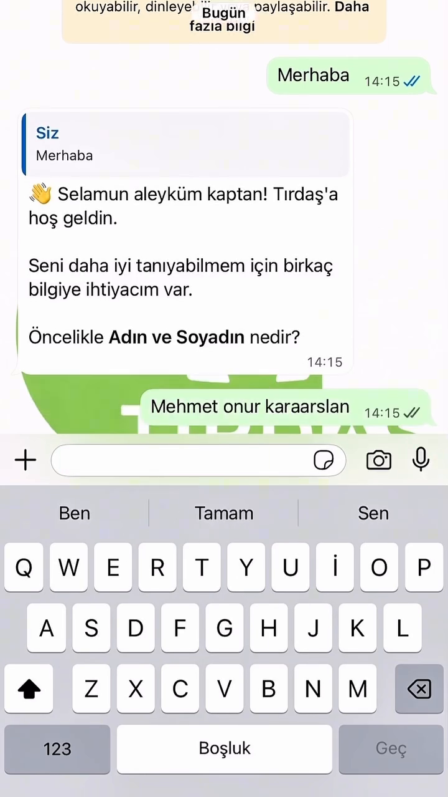
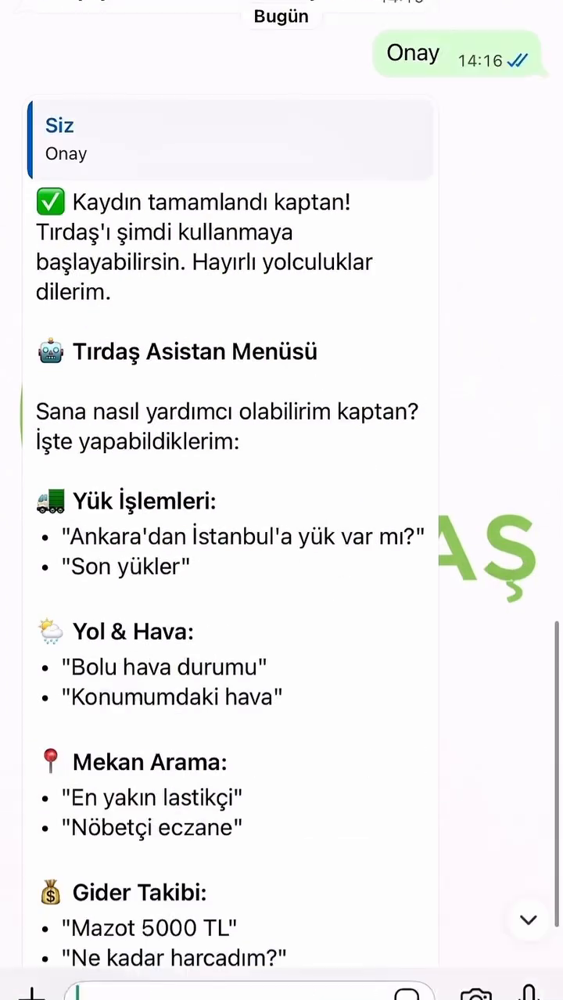
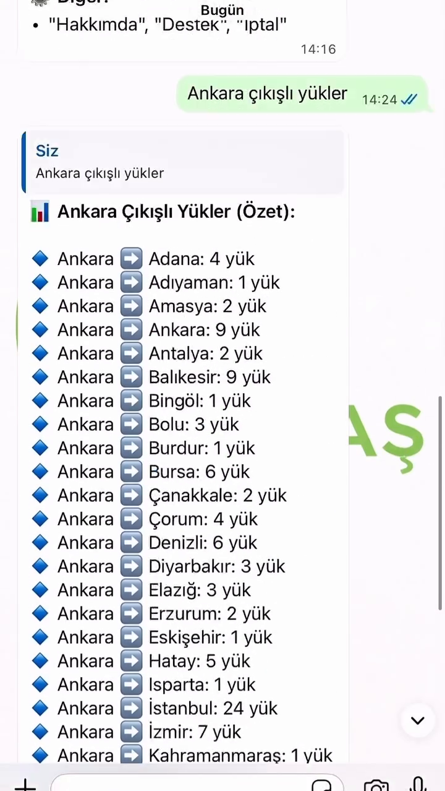
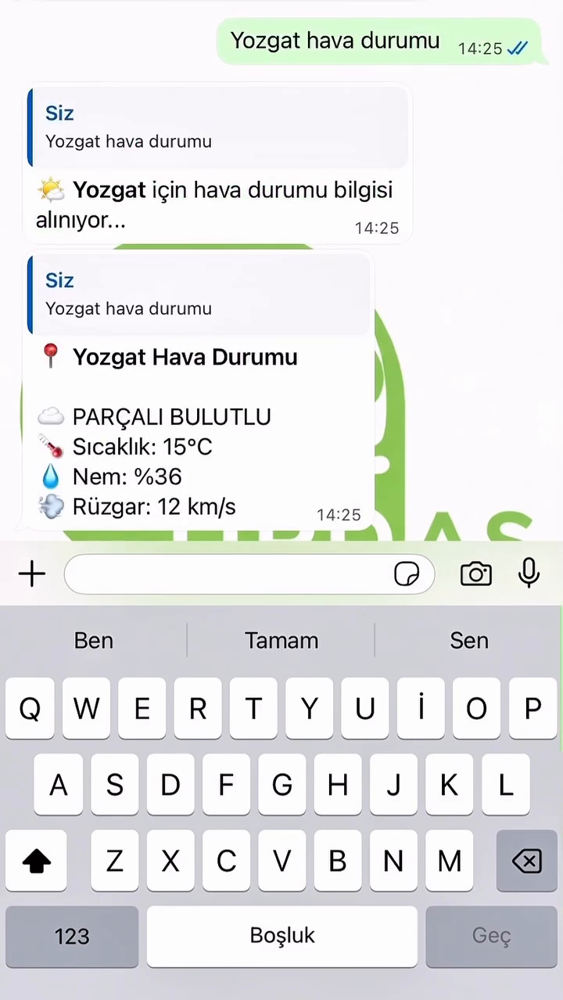
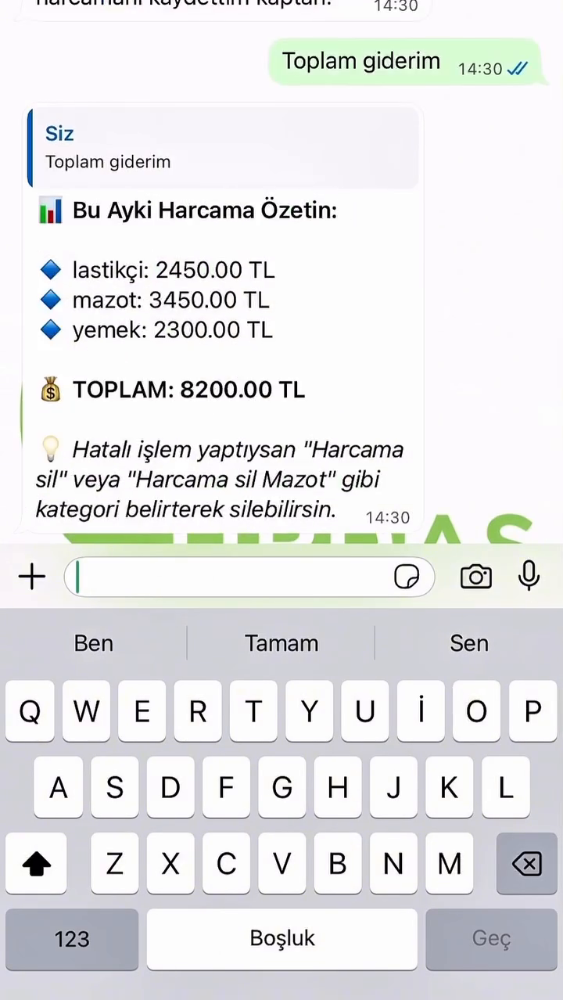
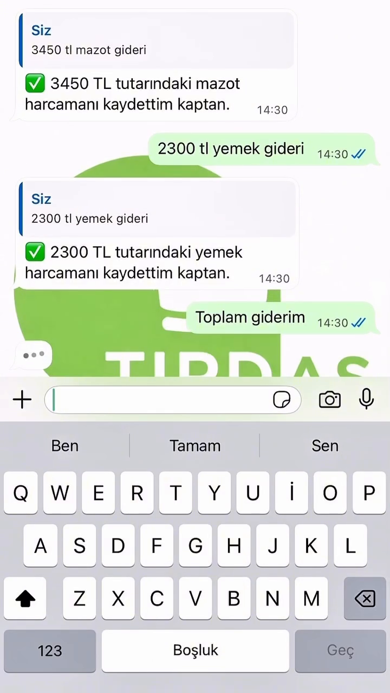
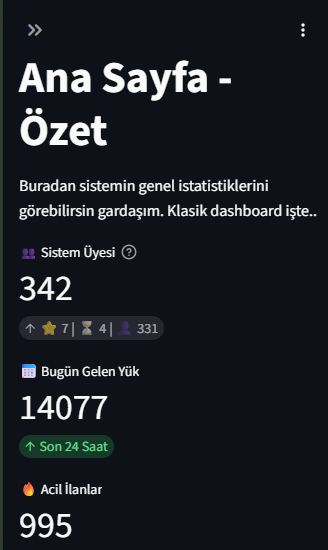
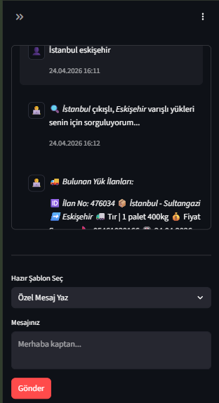
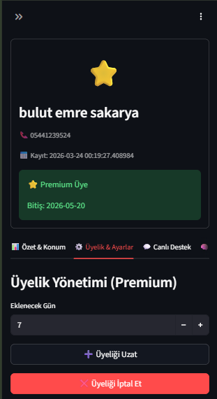
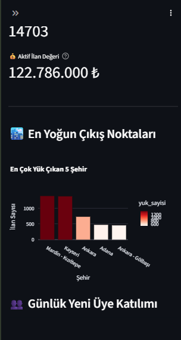

LOJİSTİK · YAPAY ZEKA · CANLI SİSTEM
Tır ve kamyon şoförlerinin yoldayken ihtiyaç duyduğu her şeye — yük bulma, hava durumu, mekan arama, gider takibi — uygulama indirmeden, doğal dille WhatsApp üzerinden ulaşmasını sağlayan otonom bir asistan. Şoför "Bolu'da yemek yenecek yer var mı?" yazar, sistem cevaplar.
neden bir uygulama değil de WhatsApp
Lojistik sektöründe yük ilanları WhatsApp gruplarında, serbest metin olarak dolaşıyor: 🚛 İZMİR -> ANKARA KAPALI KASA 15 TON gibi emojili, kısaltmalı, standart dışı mesajlar. Şoför bu grupları elle takip etmek zorunda.
Klasik çözüm bir mobil uygulama yazmak olurdu. Ama hedef kullanıcı kitlesi yolda, tek elle telefon kullanıyor ve yeni bir arayüz öğrenmeye isteksiz. Zaten açık olan uygulamaya gitmek, kullanıcıyı yeni bir uygulamaya taşımaktan çok daha düşük sürtünmeli.
iki kanal, tek veri havuzu
Sistem iki parçadan oluşuyor: otonom bir Node.js backend servisi ve veriyi anlamlandıran bir Python (Streamlit) yönetim paneli. Gruplardan gelen yapılandırılmamış ilanlar yapay zeka ile JSON'a çevrilip veritabanına yazılıyor; hem bot hem mobil uygulama aynı havuzu okuyor.
Yapılandırılmamış ilan metnini OpenAI ile analiz edip yapılandırılmış JSON'a çevirir, doğrular ve havuza yazar.
Şoförün paylaştığı anlık konumdan en yakın lastikçi, dinlenme tesisi ve lokantayı Haversine formülü ile hesaplayıp Google Maps linkiyle sunar.
Ücretsiz/premium üyelik, günlük ve aylık API sorgu kotaları ile sanal cüzdanı insan müdahalesi olmadan yönetir.
Bağlantı durumu izleme, şüpheli ilan onayı, canlı destek için AI-bypass ve kod değişmeden sistem metinlerini güncelleyen no-code prompt arayüzü.
bir chatbot yazmanın ötesi — eşzamanlılık, maliyet ve dayanıklılık
WhatsApp politikaları gereği bir botun insan doğasına aykırı hızda cevap vermesi hesabın kapatılmasına yol açar. Ayrıca kötü niyetli kullanıcıların aşırı mesaj göndermesi OpenAI maliyetlerini patlatabilirdi.
composing süresi ve gecikmeli readMessages ile doğal bir ritim kurulur.Şoför jargonundaki şehir adları ("Antep", "İzmit", "Kazan") ya da alakasız sohbet mesajları yapay zeka tarafından yanlış şehir veya geçerli yük ilanı olarak algılanıyordu.
Antep → Gaziantep).Binlerce mesaj ve ilanın panelde gerçek zamanlı listelenmesi, her sayfalamada ağır COUNT(*) sorguları üretip sistemi kilitliyordu.
created_at, status, phone_id sütunlarına eklendi.@st.cache_data(ttl=300) ve @st.cache_resource ile ağır ayar dosyaları, CSS ve analitik sayımlar RAM'e alındı.pool_size=10 bağlantı havuzu kuruldu. Panel tepki süresi %300 hızlandı.Google ve OpenAI tarafındaki kota aşımları ya da ağ kopmalarında botun çökmemesi, verinin kaybolmaması gerekiyordu.
429 Too Many Requests) kullanıcıya "Şu an sistem yoğun" döner — hata kullanıcıya sızmaz.bu projeden çıkardıklarım
| Alan | Kazanım |
|---|---|
| LLM kullanımı | Yapay zekayı chatbot olarak değil, yapılandırılmamış veriyi işleyen bir veri ayrıştırma motoru olarak kullanmak |
| Eşzamanlılık | Gerçek zamanlı ve asenkron veri akışlarında race-condition ve rate-limit problemlerini çözmek |
| Hibrit mimari | Python'un veri işleme gücü ile Node.js'in asenkron I/O'sunu tek sistemde birleştirmek |
| Otonomi | Kendi hatalarını raporlayan, kendi yedeğini alan self-healing sistemler kurmak |
whatsapp bot arayüzü ve streamlit yönetim paneli










İnteraktif demoda iki telefon yan yana — bota yaz, uygulamada gez.